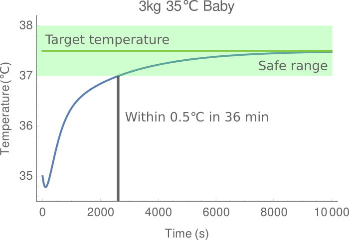
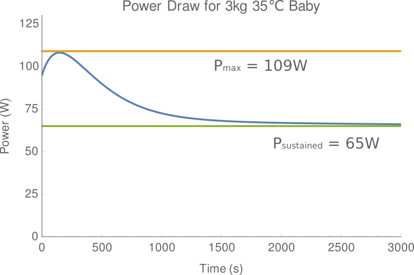
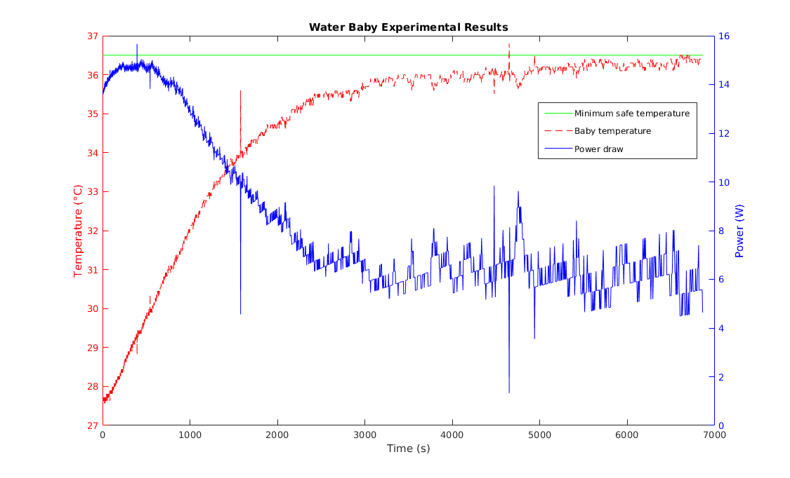
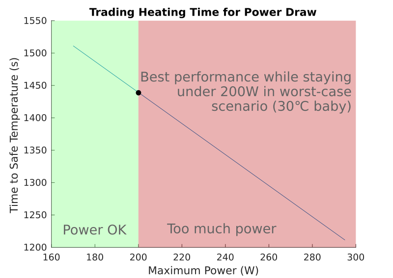

Babywarmer
As part of my Quantitative Engineering Analysis(QEA) class, in a team of two, we designed a PI control algorithm for a babywarmer device that can be used in the developing communities of the world. We managed to design a system that reaches the desired body temperature fast enough - without any significant error - while limiting the power consumption from the heater.

Affordable Design and Entrepreneurship(ADE) is a class at Olin that aims to solve quintessential problems in certain communities and one of the big problems that developing countries face is the premature death of babies due to hypothermia. The ADE team asked from QEA students to come up with a babywarmer to suit their specific needs. My partner and I chose to focus on designing a controller that would minimize power draw, while reaching the desired temperature as soon as possible.
We used Mathematica to model a PI controller that would have a proportional control component high enough that would reach the desired temperature in less than 45 minutes, for any reaconably sized baby, without drawing less than 200 W of power. Considering that we did not want to have a steady state error larger than half a degree Celcius, we decided to include an integral control along with proportional control. This let us reaching a baby's body temperature in about 36 minutes, while drawing only about 109 W maximum and maintaining a 65 W power draw at steady state.
We scale down our model to test it out using an Arduino and heating pads. We abstracted the baby to a bag of water and carried out a test to validate our model. We only had one Arduino at our disposal, which limited the number of heating pads we could use and the total amount of heat we could output. Therefore, even though our results were slightly off from our predictions, our experiment validated our model.
At the end of the project, we concluded that a PI controller is a really suitable algorithm to control a babywarmer and with more time to improve the algortihm, along with testing the model with more experiments, the controller can reach a state of actually being implemented in a real life system.
- Design: HTML5 UP